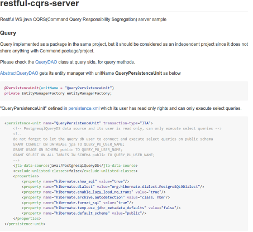

Projects
Restful Server
Restful WS Java EE Server Application, async, complex, cluster, generic, websocket examples.
More Info
Restful Client
Restful Client Application for async, complex, cluster, generic, websocket requests.
More Info
Light Gap
A light weight web application developed from scratch using standard html, css and js.
More InfoService Executor
Web services with WebSocket and Restful APIs, supports multiple languages.
More InfoData Structures
Implementation of list, queue, stack data structures with command query principle.
More InfoService Executor
Web services with WebSocket and Restful APIs, supports multiple languages.
More InfoDbC
Design by Contract methodology sample implementation with Invariant, Requires and Ensures.
More Info
MVC Interface
MVC over interface project, executing same application with Swing/JavaFX and Spring or no DI.
More Info
